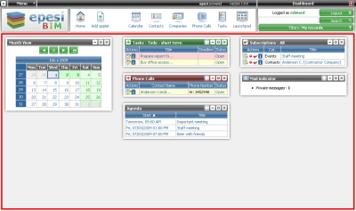
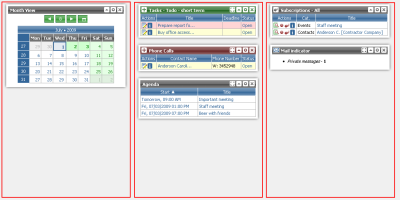
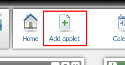

|  |
| It contains 3 columns with smaller sections called applets. Applets are small frames that display information or work as simple applications. They are often linked with epesi modules. You can arrange them in any order you wish. To do this, click on applet's title bar and simply drag and drop it at the chosen location. You can also remove and add new ones. |  | |
|  | To add a new applet, click on the "Add applet" button located in the ActionBar. Next, choose the type of the applet from the list and, if the chosen applet requires it, set applet's options. You may have more than one applet of each type on your Dashboard, all of them with individual settings. | |